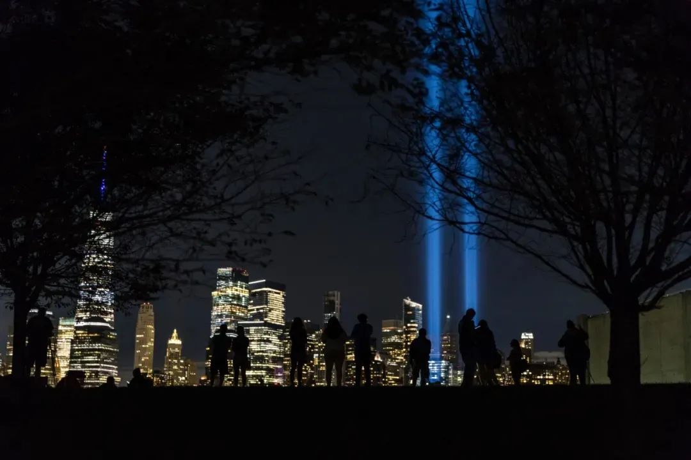

收录于合集
以下文章来源于世界知识 ，作者肖河
世界知识 .
《世界知识》杂志创刊于1934年9月16日，上世纪50年代后由中华人民共和国外交部主管、世界知识出版社主办，以“平实理性看世界”的宗旨，分享国际时政观点，解析中国外交声音。期待与广大读者、作者和合作者互动交流。
作品简介
作者： 肖河，中国社科院世界经济与政治研究所副研究员
来源： 《世界知识》2021年第17期
内容摘要： 这是一篇反思美国在9.11事件后被拖入“反恐泥潭”的评论。作者认为美国20年来的全球反恐不仅虚耗国力，且加剧了美国阶级、种族等矛盾。文章还揭示了美国反恐突显的两面性，即一面，共和党和民主党人在打一场涉及全社会的“准内战”；另一面，又试图通过渲染外部“竞争”和“挑战”寻求支持和团结。20年来，历任美国政府均试图将国内矛盾归咎于反对党，并刻意利用外部矛盾来塑造“内部团结”的契机。然而，当反恐的“潮水”退去，美国仍需新的“外部威胁”来修复昔日的“光荣和梦想”。美国兴衰成败的背后，往往裹挟着包括中国崛起在内的全球大势。
关键词： 9.11事件、全球反恐、社会撕裂、大国竞争

2020年9月11日，美国纽约世界贸易中心遗址点亮光柱，
纪念9.11事件19周年。
正文
“光荣不再，梦想破灭”，这是威廉·曼彻斯特在其现代美国史长卷《光荣与梦想》中的结语。在这位进步主义历史学家笔下，这段他所亲历的当代美国史，从富兰克林·罗斯福在大萧条的危急时刻推行新政开始，到理查德·尼克松在一群兴高采烈的作伪证者簇拥下为再次当选弹冠相庆而终，在前后40多年时间里，美国社会先是在危机和战争当中找到前进方向，进而又在漫长的冷战时期迷失自我，终于伴随着越南战争败局的到来而“尊严丧尽”，于社会撕裂和对抗中失去了曾有的精气神。
令人感慨的是，美国虽然距离曼彻斯特描绘的“历史画卷”渐行渐远，但却似乎在2001年9.11事件后又以一种“微缩”的方式重走了一遍《光荣与梦想》中的旅程。从纽约世界贸易中心废墟边的团结一致，到阿富汗和伊拉克战场的同仇敌忾、万里黄沙，再到这两个海外战场的混乱不堪，“黑人的命也是命”运动和“桑德斯社会主义”在美国国内的兴起，直至共和、民主两党许多支持者们如今的势不两立……当年目睹两架被劫客机撞向双子塔的美国人可能无论如何也想象不到，他们的国家会一步步变成现在这副样子： 一面，共和党和民主党人在打一场涉及全社会的“准内战”，另一面，又试图通过渲染外部“竞争”和“挑战”寻求支持和团结。 对美国而言，这是一个曼彻斯特在他所经历的历史中都没见过的更糟糕局面，也是一个比以往更加危险的“十字路口”。
01
从“团结则存”到“四分五裂”
在2001年9.11事件中真正失去挚爱亲朋的美国人并不多。对于那些“没有失去”的大多数，美国本土遭受的这次残酷袭击更像是一出“正剧”的开幕：虽有愤怒和悲伤，但更多展现的是即将拉开历史大幕的使命感。有人把9.11事件比作“第二次珍珠港袭击”，认为它将把美国从冷战结束后的“庸常”状态中唤醒，把在文化和价值观上日渐疏离的美国人重新团结在一起。即使是在20年后的今天，对很多美国人而言，9.11事件所能提供的典型记忆仍是两党议员在国会大厦前合唱的“天佑美国”，小布什在袭击次日发表的“反恐战争绝不会以此告终”演讲，以及那段时间美国大街小巷到处张挂的美国国旗。后来出任奥巴马政府总统国家安全事务副助理的本·罗兹当年不到24岁，他回忆说，自己在目睹了9.11事件后“如蒙上帝亲炙”，顿时感受到被从克林顿时代“琐碎政治”中解放出来的“宏大使命感”。在他眼中，2001年9月下旬的美国，人们齐声念诵着“团结则存”的建国箴言，朝着完成复仇和实现新的历史使命“一往无前”。
然而，无论美国人抱有何种期待，2001年的纽约毕竟不是1941年的珍珠港，历史剧目不会为某一国家单独而机械地重演。美国社会之所以极度期盼外部威胁焕发内部团结，正是因为后者早已在由里根开启、克林顿“发扬光大”的“新自由主义”议程中日渐坍塌。 在美国，所谓“新政”逐渐远离，财富分配中的失利者们逐日增多且哀告无门，阶级和种族矛盾的积累使得整个社会其实是在潜意识中“欢呼”9.11事件的到来。
“赝造的危机”毕竟不能弥合真实的裂痕。很快，虚假的团结随着全球反恐战争的推进烟消云散。无论是美国在阿富汗和伊拉克耗费的上万亿美元巨资，还是这两国民众承受的战乱折磨，都没有换来美国自身的“治愈”和政治更新。 美国政府借反恐之机扩张了权力，但没有也不可能将这种“战争和监控”的权力用于弥合经济分化，而只能拿来煽动不同民族、种族和宗教之间的猜忌和恐惧，甚至可以观察到，美国社会内部对“他者”的迁怒在某种程度上是从所谓“全球反恐”当中滋生蔓延的。
早在2011年纪念9.11事件十周年时，美国社会的看法就已逐渐泾渭分明。主流媒体和保守派仍在大张旗鼓宣传“美国的牺牲和荣耀”，奏响的是“爱国主义”和“民族主义”的高歌，而在不少自由派人士眼中， ** 9.11事件的悲剧性不在于恐怖袭击本身，而在于美国以反恐之名对其他国家施暴。** 两派力量、两种纪念，只隔着曼哈顿几个街区，却有着对过去、现在和未来的完全不同的理解。在本·罗兹看来，不论是奥巴马还是特朗普，如果没有9.11事件，他们都当不上美国总统。如果说奥巴马在2008年的当选是得益于彼时人们的“反思”占了上风，那么特朗普在2016年的胜出则要感谢美国人当中的“迁怒”情绪占了上风，这前后是普通美国民众的经济条件在“没有尽头的战争”当中持续恶化。到了2019年底的大选，这两股力量终于由“此起彼伏”变为“分庭抗礼”，政治对抗由选举延伸到冲击国会、诉诸法院试图更改结果，以及在野的民主党以“支持暴乱”为由发起对即将离任总统的弹劾，其间应对疫情这种“非政治事务”也要让位于党争，围绕疫情是否真实存在、疫苗接种是否是联邦政府“阴谋”也要争论一番。
邪恶的土壤上开不出正义之花，操纵虚假的威胁也带不来发自心底的团结。 9.11事件20年来，美国社会所期盼的团结不仅“昙花一现”，而且模糊了本应解决的问题，最终适得其反地把国家推入更加“四分五裂”的状态。
02
从“全球反恐”到“大国竞争”
“全球反恐”是9.11事件之后小布什政府打造的优先议程。“他们为什么恨我们？是因为这里有一个民主选举的政府”——这一直截了当的自问自答将实现复仇、促进“民主”和保障本土安全“完美地”结合起来。也正是因为这种“完美”，9.11事件后的历届美国政府很难走出全球反恐议程。
小布什政府亲手挑起了两场战争，编写了“9.11时代”的基本剧目：无休止的“反叛乱”战争和国家重建。 在伊拉克，高调宣布“使命完成”的志得意满很快被再度增兵的惶惑不安代替，代价是小布什本人赔上了之前取得的所有政治资本，以“最不受欢迎总统”的评价黯然离场。 继之而起的奥巴马政府虽然早已看出继续全球反恐战争殊为“蠢事”，但在“反恐、民主、安全”三位一体“金字招牌”之下，面对新崛起的“伊斯兰国”也只能勉强将“蠢事”划分为“正确的战争”和“错误的战争”两类，维持前者，撤出后者，同时避免在利比亚或叙利亚犯下“新的错误”。或是正因为此，对奥巴马政府“没有战略”的批评陪伴其任期始终。
特朗普则要比奥巴马轻松得多。作为美国社会极端保守派的代言人，这位“明星总统”无论选择何种战略，都能免于来自右派的批评。 特朗普早就断言，“阿富汗（战争）是一场彻头彻尾的灾难”，“重建美国比重建阿富汗更重要”。然而，即使是特立独行的特朗普，要想摆脱全球反恐的“魔咒”也并不容易。 他推动的撤军、和谈方案屡遭强硬派反对和破坏，2019年秋一度因美国与阿富汗政府和塔利班“戴维营会谈”临时取消而差点胎死腹中。与此同时，特朗普政府内反对继续阿富汗战事的同一拨人开辟出了伊朗、也门等新的战场，导致波斯湾数度剑拔弩张，甚至一度走到对伊朗动武只等特朗普本人拍板的“最后关头”。 到下台前最后一天，特朗普也没能实现让驻阿美军“全部回家”的竞选承诺，他的反对者们则将希望寄托在拜登团队中的建制派能“拨乱反正”之上。 而拜登这位被美前国防部部长罗伯特·盖茨称作“过去40年间在几乎所有重大对外政策和国家安全议题上都犯了错误”的前副总统，领导的是一个经历了“特朗普主义”狂飙之后更加左翼和激进的民主党，他选择的不再是奥巴马式的“谨慎平衡”，而是大胆翻开“新的一页”。
至此，由9.11事件拉开大幕、小布什政府奠定基础的“全球反恐时代”终于行将落幕。在这个“时代”里，对“他者”的恐惧和遭受袭击的担忧萦绕着整个美国社会，甚至发展到了神经质的程度。有评论家说， 9.11事件后平均每年在美国本土死于恐怖袭击的不过六人，却有335人淹死在自家浴缸中，民众却总是将防止前者作为政府和国会的头等重要议题。 在这种气氛中，就连全球反恐的终结方式也颇具悲剧性： 推动其终结的并非美国社会恢复了安全与平和，而是找到了新的、更加严重的恐惧源，也就是“中国威胁”。 不论是特朗普还是拜登，在试图从全球反恐泥沼中抽身时，无不试图强调反恐模糊了真正的战略重点、浪费了宝贵的战略资源，其结论不言自明， 那就是结束反恐，一心一意遏制中国 。然而，美军根据拜登的指令速撤后，阿富汗以出乎美国军情界预料的方式迅速“变天”，为这一苍惶转向预置了失败的注脚。
03
十字路口的抉择
过去20年间，过去的联邦议员、如今的白宫主人拜登或许是美国决策层当中在全球反恐问题上“犯错”最少的人。 他自2005年起就公开承认后悔当初在国会参议院投票赞成小布什发动伊拉克战争，并一以贯之地在政府内外将推动美国从战争泥潭中抽身作为自己的“政策标签”。 无论是发自内心还是迫于形势，拜登正与民主党的左翼密切合作，推动一系列以“重建美国”为宗旨、带有“进步主义”色彩的法案。
拜登政府试图寻找从内部弥合分歧、治愈美国的方式，但显然无法完全摆脱9.11事件所开启的反恐时代负面遗产。拜登团队不仅不敢在中美关系的很多关键议题上妥协，反而机会主义地利用“中国威胁”来推动旨在激励创新、重整基建的重要国内立法。对此，就连前不久公开撰文批评“华盛顿危险的对华共识”的民主党左翼旗手伯尼·桑德斯也不能“免俗”。他力主中美应避免零和博弈，呼吁美国集中精力应对自身问题，同时附和了要应对中国“竞争”、维持美国“领导地位”的调门。无论如何， 美国徘徊在自身兴衰成败的“十字路口”，这背后又是包括中国崛起在内的全球大势。 中国有耐心和余裕面对美国的踯躅，有能力和决心应对美国的遏制，也有诚意等待其找到真正符合美国人民利益的国家之路。
排版 | 黄紫蓝 杜丛竹
本文刊登在《世界知识》2021年第17期
文章观点不代表本平台观点